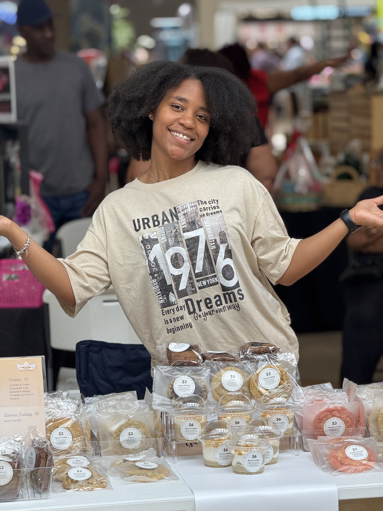

✨ Baked with Grace • Served with Love • Freshly Baked to Order • Grace & Batter • Broward County, FL • Handmade Desserts •
✨ Baked with Grace • Served with Love • Freshly Baked to Order • Grace & Batter • Broward County, FL • Handmade Desserts •
Grace & Batter was created from a love for baking, creativity, and bringing people together through homemade desserts.
What started as a passion quickly became something much bigger—a business built on faith, excellence, and serving others with love.
Every cookie, cheesecake, brownie, pudding cup, and custom dessert is handcrafted from scratch because I believe every customer deserves something special.

May 10, 2025
My very first pop-up event will always hold a special place in my heart.
Leading up to that day, I stayed awake for nearly 36 hours baking, decorating, packaging, organizing, and preparing every dessert by hand.
By the time customers arrived, I was exhausted. But I greeted every person with a smile, because I believed in the dream God had placed on my heart.
That day stretched me. It taught me lessons about preparation, time management, customer service, and perseverance that no class or recipe could ever teach.
There were moments when I wanted to quit. But I didn't. Looking back now, I'm thankful for every obstacle because they helped shape Grace & Batter into what it's becoming today.
Everything we create is rooted in gratitude, purpose, and serving others with excellence.
Fresh ingredients. Handmade desserts. Small batches. Every single order.
Every celebration matters. We're honored to be part of birthdays, weddings, baby showers, holidays, and everyday moments.
Grace & Batter began serving homemade desserts.
Officially rebranded from Baked by Miracle to Grace & Batter LLC.
First pop-up event. One of the hardest days. One of the most rewarding days.
Continuing to grow through custom orders, pop-ups, and serving every dessert with grace and love.
Whether you've ordered once, shared a post, visited a pop-up, or you're discovering Grace & Batter today— thank you. Your support means more than you know.
View Our Menu